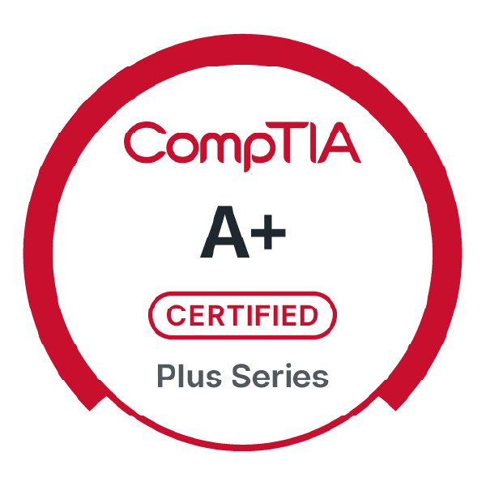
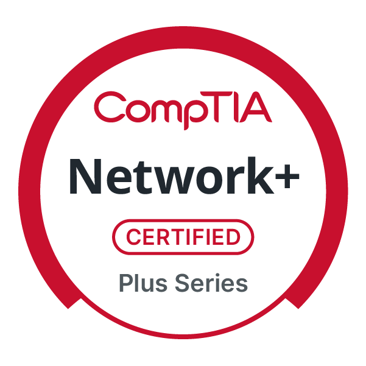
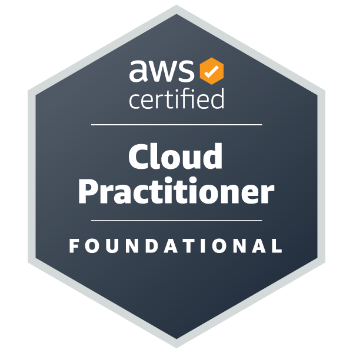

About Me
I'm Shawn — a software engineer and IT professional based in Atlantic County, NJ. I build full-stack applications and security tools while also providing hands-on tech support for homes and small businesses.
On the development side, I've built projects like Securalith, a professional cybersecurity monitoring platform, and the AI-powered CompTIA quiz generator on this site. I enjoy solving real problems with software — whether that's building security tools from scratch or creating useful applications that people actually benefit from.
My background includes a Computer Science degree, professional IT certifications, and experience across both software development and IT infrastructure. I approach every project and support request with the same care I'd use on my own systems.
Professional Background & Certifications
A summary of my professional qualifications in software engineering and IT.
 Computer Science Graduate
Computer Science Graduate

CompTIA A+
CompTIA Network+
AWS Cloud Practitioner